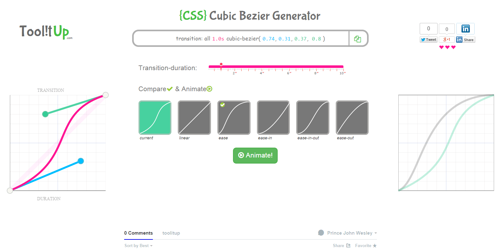
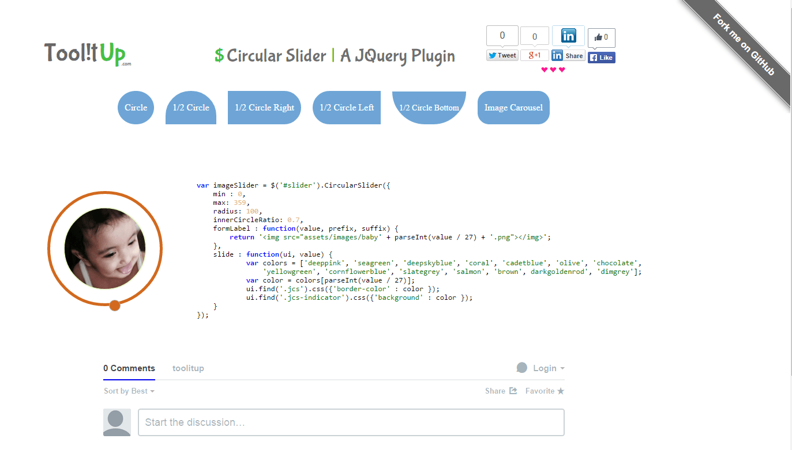

Cubic Bezier curve can be used as a timing-transition-function. This tool helps to generate bezier curve and compare it
with the predefined easing functions like linear, ease, ease-in etc.

Circular Slider
Circular slider is a jquery plugin for range values and image carousel. It supports half and full circluar sliders.
